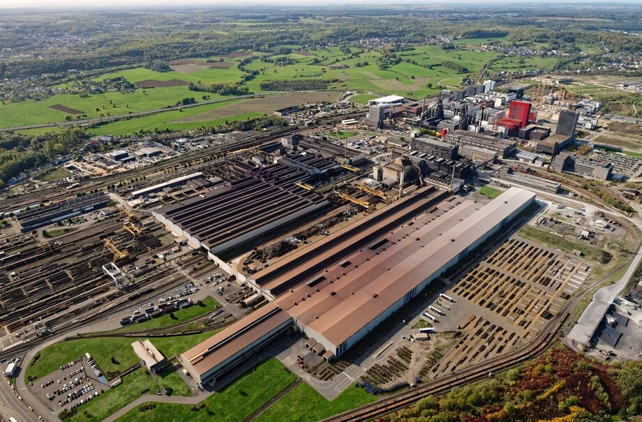

Présentation de ArcelorMittal
L'entreprise ArcelorMittal est l'un des leaders mondial de la sidérurgie. Créé en 2006 à la suite de
la fusion entre Arcelor et Mittal Steel, il s'impose comme un incontournable dans la production et la transformation
de l'acier.
J'ai travaillé dans la filière ArcelorMittal Long Products Luxembourg qui est spécialisée dans la production
dans la production de produits long en acier au Luxembourg. LPL joue au un rôle central dans l'activité sidérurgique du pays en s'appuyant
sur un savoir-faire industriel historique, tout en intégrant des technologies modernes avec plus de 2000 employés.
LPL a été formé en 2022 et regroupe les sites de : Differdange, Rodange, Belval et Dommeldange.
Mon alternance a été faite sur le site de Belval où environ 1000 personnes y travaillent.